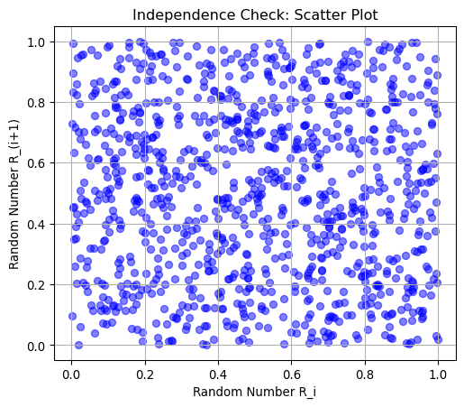
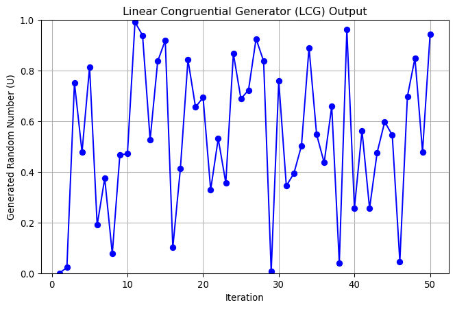

Random Number Generationis a process by which, often by means of a random number generator (RNG), a sequence of numbers or symbols is generated that cannot be reasonably predicted better than by random chance.
This session is designed to introduce you to the basic concept of random number generation that is used for (stochastic) simulation.
This session provides an overview of random number generation (RNG). It explains random numbers generated through algorithms, and their desired properties — independence and uniformity. Also, it discusses the importance of random number generators in simulations and outlines key properties. Algorithms for generation of pseudo-random numbers, including the Linear Congruential Generator (LCG), are introduced.
Chapter 1 in Robinson, S. (2014). Simulation: the practice of model development and use. Bloomsbury Publishing.
A.2 Randomness in Simulation
Before diving into the details of random number generation, let’s first review why randomness is important in simulation modeling.
A.2.1 Why Do We Use Randomness in Simulations?
Many real-world systems involve uncertainty, meaning we cannot predict their outcomes with absolute certainty. Examples include:
Finance: Stock price movements are unpredictable.
Supply Chain*: Customer demand fluctuates daily.
Healthcare: Patient wait times vary based on arrival patterns.
Manufacturing: Machines may experience random failures.
To model and analyze these uncertainties from many possible inputs and the outcomes therefrom, we use stochastic methods, including Monte Carlo simulations, which rely on random numbers to mimic real-world randomness.
Since these models depend on random inputs, generating high-quality random numbers is crucial to ensure accurate and reliable results by analyzing situations.
A.2.2 How Are Random Numbers Used in Simulations?
Random numbers allow us to sample from probability distributions.
In many applications, we don’t just need random numbers between 0 and 1 —– we need them to follow specific distributions, such as normal, exponential, or Poisson distributions.
Random numbers are first generated in the (0,1) range, then transformed to fit the required distribution for the simulation.
A.2.3 Are These Numbers Truly Random?
Computers are deterministic—they follow instructions precisely. This means they cannot generate truly random numbers. Instead, they generate pseudo-random numbers, which are:
Not truly random, but appear random.
Generated using mathematical formulas and initial seed values.
Replicable, meaning the same seed will always produce the same sequence of numbers.
“Anyone who considers arithmetical methods of producing random digits is, of course, in a state of sin.” — John von Neumann
This means that using a deterministic process to generate randomness is fundamentally flawed, yet necessary for computational applications.
A.3 Random Numbers
A.3.1 What Are Random Numbers?
Let’s consider a sequence of \(N\) random numbers as a set of numbers, denoted as:
\[ R_1, R_2, R_3, ..., R_N. \]
To be useful (considered as random numbers) in simulations, each number in the sequence is expected to exhibit certain properties.
A.3.2 Key Properties of Random Numbers
Two fundamental properties of a good random number sequence are indenpendence and uniformity:
Independence – Each number in the sequence must be statistically independent from the previous numbers
The value of one number should not affect the next number. This means that knowing RiR_iRi gives no information about Ri+1R_{i+1}Ri+1.
Example: If we generate the number 0.32, the next number should be completely unrelated, not something like 0.33 or 0.31.
Uniformity – The numbers should be uniformly distributed over the interval \((0,1)\).
The numbers should be evenly distributed between 0 and 1. This means that every subinterval of equal length should have approximately the same count of numbers.
Over many trials, each sub-range within (0,1) should contain roughly the same proportion of numbers.
Example: If we generate 1,000 random numbers and divide the range into 10 equal bins, each bin should contain approximately 100 numbers.
A truly uniform distribution ensures that the generated numbers cover the entire range without clustering or gaps.
✔ Uniform Distribution: Every interval gets an equal share of numbers.
✖ Non-Uniform Distribution: Some ranges get more numbers than others, causing bias.
A.3.2.1 What Happens If These Properties Are Violated?
If a random number generator does not maintain these properties:
Lack of Independence: The numbers follow a pattern, making results predictable
If the numbers are not independent, patterns may emerge, leading to biased results in simulations.
Lack of Uniformity: Some numbers occur more frequently than others, biasing the simulation.
A.3.2.2 Mathematical Representation
Mathematically, we say that a sequence of random numbers follows a \(\mathrm{Uniform}(0,1)\) distribution:
This notation means that each number \(R_i\) is drawn independently from a uniform distribution between 0 and 1, and
A.3.2.3 Why Are These Properties Important?
Many simulations assume independent inputs--—if they are correlated, results may be inaccurate.
Transforming uniformly distributed numbers into other distributions (e.g., normal, exponential) requires them to be evenly spread over (0,1).
If random numbers fail to meet these properties, simulations may not reflect real-world randomness properly.
A.3.2.4 Example
Here are two visualizations of 1000 random numbers generated by a library (numpy) in a popular programming language (python)1:
Scatter Plot (Independence Check) – This plot shows pairs of consecutive random numbers (\(R_i\), \(R_{i+1}\)). If the numbers are truly independent, there should be no visible pattern in the scatter plot, just a random spread of points.
import numpy as npimport matplotlib.pyplot as plt# Generate pseudo-random numbers to test independence and uniformitynum_samples =1000random_numbers = np.random.rand(num_samples)# Plot 1: Scatter plot (Independence check)plt.figure(figsize=(6, 5))plt.scatter(random_numbers[:-1], random_numbers[1:], alpha=0.5, color='blue')plt.xlabel("Random Number R_i")plt.ylabel("Random Number R_(i+1)")plt.title("Independence Check: Scatter Plot")plt.grid(True)plt.show()

Histogram (Uniformity Check) – This histogram displays the frequency distribution of the generated random numbers. A well-behaved uniform distribution should result in a flat histogram, meaning the numbers are spread evenly across the interval \((0,1)\).
These visual checks help confirm that the generated numbers maintain independence and uniformity, two crucial properties for simulation modeling.
A.4 Random Number Generators
Let’s explore one of the the most well-known and widely-used pseudo-random number generators (PRNGs): the Linear Congruential Generator (LCG).
A.4.1 What is an LCG?
The Linear Congruential Generator (LCG) is a RNG for generating pseudo-random numbers using a mathematical recurrence relation.
This method is simple yet effective, which follows this recursive formula:
\[
X_i ~ =~(aX_{i−1}+c) ~ \mathrm{mod} ~ m
\] where:
\(X_i\) is the next number in the sequence.
\(X_{i−1}\) is the previous number (starting with a seed \(X_0\)).
\(a\) is the multiplier (controls randomness spread, how numbers are spread).
\(c\) is the increment (optional, often \(0\)).
\(m\) is the modulus (determines the upper bound, the range of generated numbers).
The output random number (the final pseudo-random number) is then calculated as: \[
U_i ~ = ~ \frac{X_i}{m}
\] where \(U_i\) is a uniform random number in the range \((0,1)\).
A.4.2 How Does It Work?
LCG can produce pseudo-random numbers through the following procedure and iteration:
Step 1. Choose initial parameters: \(a\), \(c\), \(m\), and the seed \(X_0\).
Step 2. Generate the next value \(X_i\) using the recursive formula.
Step 3. Scale the output by dividing by \(m\) to obtain a number \(U_i\) in the range (0,1).
Step 4. Repeat Steps 2 and 3, producing a sequence of pseudo-random numbers.
It’s simple and easy to implement with only a few arithmetic operations, and so it’s very fast for generating sequences with reproducibility (i.e., given the same parameters and seed, the same sequence can be generated where the same calculations are performed).
A.4.2.1 Example of Step-by-Step Calculation
Let’s consider an LCG with the following parameters:
We repeat this process to generate pseudo-random numbers in python.
import numpy as npimport matplotlib.pyplot as plt# Parameters for the LCGa =123# Multiplierc =4# Incrementm =5678# ModulusX0 =1# Seednum_samples =50# Number of random numbers to generate# Generate the LCG sequenceX = [X0]for _ inrange(num_samples -1): X.append((a * X[-1] + c) % m)# Normalize to get U values in (0,1)U = [x / m for x in X]# Plot the generated numbersplt.figure(figsize=(8, 5))plt.plot(range(1, num_samples +1), U, marker='o', linestyle='-', color='b')plt.xlabel("Iteration")plt.ylabel("Generated Random Number (U)")plt.title("Linear Congruential Generator (LCG) Output")plt.grid(True)plt.ylim(0, 1)# Show the plotplt.show()

A.4.2.2 Example in Excel
Excel provides built-in random number functions, but we can manually implement an LCG using simple formulas. For the following example’s implementation on Excel, please check this file - Mod_2-4_RNG_Ex.xlsx.
Choose LCG parameters:
Let’s consider predetermined parameters:
a = 123
c = 4
m = 56789
X0 = 1
Set up columns in Excel:
Column F: Iteration number i
Column G: the linear term = a * X(i-1) + c
Column H: Xi (integer sequence) = Q mod m
Column I: Ui (normalized random numbers) = X(i) / m
Drag the formulas down to generate multiple random numbers.
A.4.3 Key Parameters in LCGs
To ensure the quality of the generated pseudo-random numbers, the following parameters of a LCG must be carefully selected:
Multiplier \(a\)
Must be chosen to ensure a long cycle length.
A poor choice can result in short cycles or patterns in the output.
Increment \(c\)
If \(c=0\), the generator is called a multiplicative LCG (not recommended in some cases).
If \(c\neq0\), the generator is an additive LCG, which can avoid some weaknesses of the multiplicative version.
Modulus \(m\)
Determines the maximum range of numbers before repetition.
Commonly chosen as a large prime number or a power of 2 (e.g., \(2^32\) or \(2^64\), considering the sake of processing in a 32-bit or 64-bit computer).
Seed \(X_0\)
The starting value—choosing a good seed ensures different runs generate different sequences.
If the same seed is used, the same sequence will be generated (which is useful for reproducibility).
A.4.3.1 Cycle Length and Periodicity
The period of an LCG is the number of numbers it generates before repeating.
A full-period LCG generates all numbers from \(0\) to \(m - 1\) before repeating.
A poorly chosen \(a\), \(c\), or \(m\) can result in very short cycles, reducing randomness quality.
For example, the numbers generated in the example above with \(m = 9\) shows repetition after just a few iterations instead of spanning the full range.
How to Choose Good Parameters?
A good LCG follows the Hull-Dobell Theorem, which states that for an LCG to have a full period:
\(m\) and \(c\) must be relatively prime to (i.e., they have no common factors).
\(a − 1\) must be a multiple of all prime factors of \(m\).
\(a − 1\) must be a multiple of \(4\) if \(m\) is a power of \(2\).
There have been many studies on good values for LCG parameters, and many modern systems use large prime values for \(m\) to ensure long periods. A well organized list is available in Parameters in common use.
A.4.4 Why Test an LCG?
To check the quality of an LCG (of course, other PRNGs too), we can apply some tests, because not all LCGs produce good random numbers. Some issues include:
Short cycles – Numbers repeat too soon.
Lack of uniformity – Some values occur more often than others.
Correlation – Consecutive numbers may be related, reducing randomness.
As defined earlier, statistical properties are those that can readily be tested to analyze the numbers.
A.4.4.1 Minimal Statistical Test for LCG: Uniformity
One simple way to test an LCG is to compute the sample mean of a set of generated numbers and compare it to the expected mean of a uniform distribution.
That is, we generate the random numbers to follow that fall into the range between 0 and 1, the theoretical mean of the uniform distribution is 0.5. If our LCG is good, the sample mean of the generated numbers should be close to 0.5.
Also, if the LCG is good, such sample means are expected to show stable around 0.5 for increasing sample sizes.
Similarly, the empirical distribution of generated random numbers should be uniformed distributed.
Step 2: Transform to Desired Distribution and Return values based on an output function.
Most applications require numbers from specific probability distributions (e.g., normal, exponential, Poisson).
We apply a function \(g(X)\) to transform uniform \((0,1)\) random numbers into the desired distribution.
Example: In LCGs, we use \(g(X) = \frac{X_i}{m}\)
Mathematical Representation
The general random number generation framework can be expressed as: \[
\begin{split}
&X_i = f_i(X_{i-r}, X_{i-r+1}, ..., X_{i-1}) \quad \text{for} \quad r \geq 1 \\
&U_i = g(X_i)
\end{split}
\]
where: * \(f_i\) is the function generating the sequence. * \(g(X)\) transforms the sequence into a desired distribution.
A.4.6 Other RNGs
We have primarily focused on LCGs, but there are many other methods for generating pseudo-random numbers. Let’s explore a few of them.